Creating New Scenes
WeaverCore can also be used to create new scenes, allowing you to add new areas to the game.
Note
Currently, it is not possible to add new area types (such as crossroads, city of tears, deepnest, etc), but that is something I would like to make possible in the future
To get started, go to "File -> New Scene"...

...Select the "Game Scene Template" scene, and click "Create":

This will create a new scene with a few required object created for you:

Important
Make sure you save the scene (either via CTRL + S, or by going to "File -> Save"), otherwise any new changes you make to this scene will be lost
1 : BlurPlane
The BlurPlane is a required object for every scene in Hollow Knight. Any objects you place behind it will be blurred. This allows you to differentiate between foreground and background objects. You are able to move and scale the blur plane as much as you want (but I don't recommend rotating it). You are also allowed to move it closer or farther away from the camera.
2 : Ground
This object is entirely optional, and is meant to give you some ground to start off with
3 : SceneManager
This object is also required for every scene in Hollow Knight, and contains metadata about the current scene:

I will go over each of the different things you can customize about it:
| Field | Description |
|---|---|
| Scene Type | The type of scene this is. See GlobalEnums.SceneType for a list of valid options. Most of the time, this should be left as GAMEPLAY |
| Map Zone | The type of area this scene is located in. See GlobalEnums.MapZone for a list of valid options |
| Is Windy | Is the scene windy? |
| Is Tremor Zone | Does this scene experience tremors? |
| Enviroment Type | What type of environment does this scene have? Used to determine any extra environmental effects that occur |
| Darkness Level | The darkness level of the scene. If the darkness level is 1, then the scene requires a lantern. Not sure what higher levels do yet |
| No Lantern | If set to true, the player will not be able to hold a lantern when entering the scene |
| Default Color | The ambient color of the scene |
| Default Intensity | How intense the ambient color of the scene will be |
| No Particles | If set to true, the scene will not have any environmental particles playing in it |
| Override Particles With | Used to override the default map zone particles with something else |
| Music Delay Time | A delay before the scene's music starts playing |
| Music Transition Time | The time it takes to transition into the scene's music |
| Transition Time | Time time it takes to transition to all the other snapshots (Atmos, Actor, Shade, and Enviro Effect Snapshots). More info on these later |
| Music | The is the music pack that will be applied when the scene is loaded. A music pack contains all the different music tracks that will be played when the scene loads up (More info on this later) |
| Custom Music Snapshot | If set to true, then this allows you to specify a specific snapshot to use when loading the scene, rather than using the snapshot on the Music Pack. Click Here to see what music snapshots enable which music tracks |
| Can be Infected | Does this scene have an infected variant (like the crossroads)? If this is set to true, then you can also specify a music pack that is played only when the scene is infected |
| Atmos Snapshot | This is used to apply an atmos snapshot to specify what atmosphere sounds are played in the scene. Click Here to see what snapshots enable what sounds |
| Actor Snapshot | This is used to apply an actor snapshot when the scene loads. This should be left "On", because otherwise, the player's sound effects won't play when set to "Off" |
| Shade Snapshot | This is used to apply a shade snapshot when the scene loads. This should be left "Away", because otherwise, the shade jingle effect will be played when set to "Close" |
| Enviro Effects Snapshot | This is used to specify what enviromental sound effects are played when the scene loads. Click Here to see what snapshots enable what effects |
4 : door1
This object is an example of a transition point (also referred to as gates). A transition point is an object the player interacts with to transition both to AND from a scene. I will go over the list of options that can be configured on the TransitionPoint:

| Field | Description |
|---|---|
| Gate Type | The type of transition gate this is. This determines how the player enters and leaves a scene. See GatePosition for a list of valid options and what they do |
| Is a Door | If this is set to true, then the player must press up on their controller to enter the game. They don't enter the transition immediately upon touching it |
| Entry Delay | The delay before the player spawns from this gate into the scene |
| Always Enter Right | Should the player always face right when spawning from this Transition Point? |
| Always Enter Left | Should the player always face left when spawning from this Transition Point? |
| Target Scene | The name of the scene the player will be sent to when the player touches this transition point |
| Entry Point | When the player is sent to the Target Scene, this is the name of the Transition Point the player will spawn at when they get there |
| Entry Offset | This is a positional offset applied to the player when they spawn at this Transition Point |
| Non Hazard Gate | Should the player respawn at this Transition Point if they take spike damage? |
| Respawn Marker | The object the player should respawn at if they take spike damage. Only used if "Non Hazard Gate" is set to false |
| Scene Load Visualization | This is used to customize the effects that are played when the player spawns in from this Transition Point |
| Custom Fade | If set to true, this disables the default "Fade-in-from-black" behavior that occurs when spawning in. This is used to implement custom transition fades |
| Enable Atmos Snapshot | Should a new atmos snapshot be applied when the player touches this transition point to go to a new scene? If set to false, then the atmos snapshot will remain unchanged. Click Here to see what snapshots enable what sounds |
| Enable Enviro Snapshot | Should a new enviro effects snapshot be applied when the player touches this transition point to go to a new scene? Click Here to see what snapshots enable what effects |
| Enable Actor Snapshot | Should a new actor snapshot be applied when the player touches this transition point to go to a new scene? This should be left enabled, so the knight's walking sound effects are disabled when the player is transitioning to a new scene |
| Enable Music Snapshot | Should a new music snapshot be applied when the player touches this transition point to go to a new scene? Click Here to see what music snapshots enable which music tracks |
Setting up the scene
For this tutorial, what we are going to do is change the doorway leading from the Hall of Gods room so the player travels to our new scene when entering it:
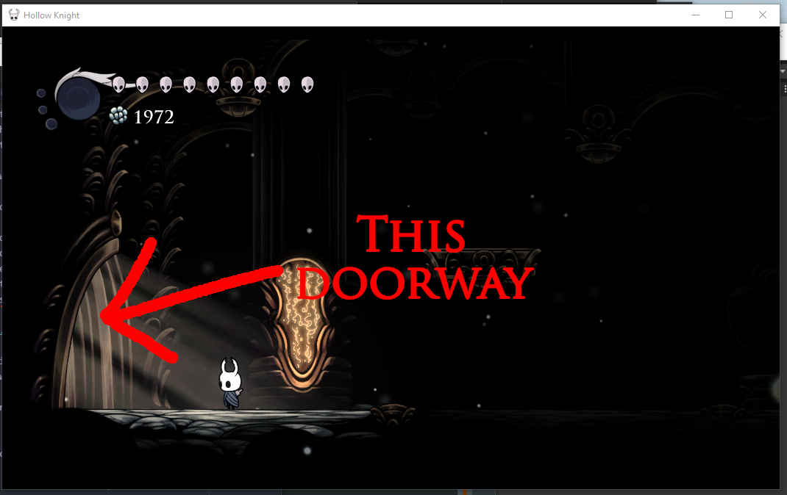
First, we need to setup a transition point in our scene that the player will be spawned at when they arrive at our new scene. It will also act as our way of getting out of the scene.
Lets take the existing "door1" transition point and move it so that it's on the ground:

Note
If you ever need to create a new TransitionPoint in the scene, you can create one by going to "WeaverCore -> Insert -> Transition Point"
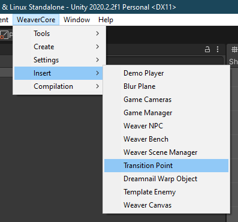
Make sure the Transition point is a door type. This means the player will need to press up on their controller in order to go back:

Now we need to configure the target scene value and the Entry Point value:

These values determine where the player will be transported to when they enter the door. We will configure these values so the player goes to the Hall of Gods room when they enter the door. To find these values for the Hall of Gods room, we need to start up Hollow Knight, go to the Hall of Gods room, and open the WeaverCore Debug Tools:
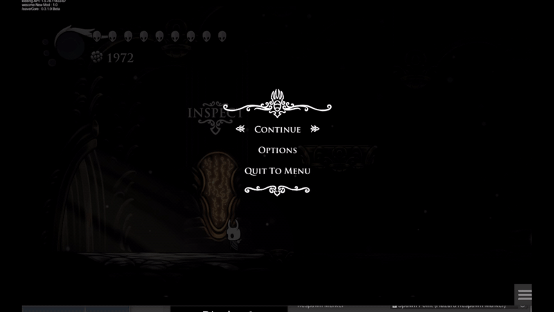
One neat thing that Team Cherry has done is that they have a standard way of naming their doorways/transition points. In our case, if we want to get the doorway at the left side of the scene, we simply search for the name "left1", and we will find the transition point we want. The two values we need are the scene name "GG_Workshop", and the name of the transition point the player will spawn at "left1":

We take these two values and fill them in the "Target Scene" and "Entry Point" fields:

Now when the player uses the door in our new scene, they will be transported to the left doorway of the Hall of Gods Room!
Except, how is the player supposed to get to our new scene in the first place? What we now need to do is change the existing Hall of Gods doorway to transport the player to our new scene when the player uses it.
To do this, we need to create a new object called a Scene Record.
Scene Record
A scene record is an object that contains a list of scene related changes we are applying to the game. We can easily create one by going over to "WeaverCore -> Create -> Scene Record":
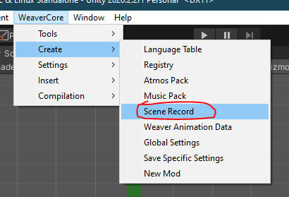
Make sure you add it to the Registry to enable it in-game:
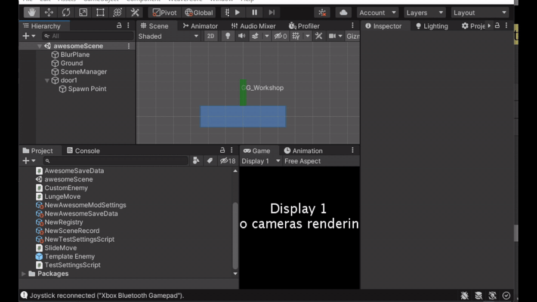
A scene record allows you to do some neat things with scenes:
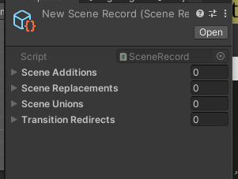
- You can add new scenes into the game by adding them to the "Scene Additions" list.
- You can replace an existing scene in the game with a new one by adding to the "Scene Replacements" list.
- You even can combine a new scene with another by adding to the "Scene Unions" list.
However, the "Transition Redirects" list is the one we are concerned about for this tutorial. This list allows us to modify an existing transition point in the game and make it point to a new location. In our case, we want to use it to modify the doorway in the Hall of Gods room to transport us to our new scene when the player interacts with it. To get started, click on the dropdown arrow and click on the "+" to add a new list entry:
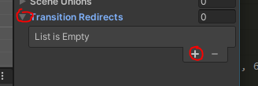
This will create an empty entry that we can modify:

The first two fields are used to specify the transition point we want to modify. In our case, it is the "left1" doorway in the "GG_Workshop" scene:
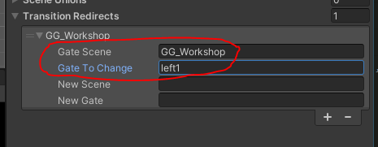
The last two values is used to specify the new destination we want this doorway to take the player to. In our case, it will be the name of the new scene we are creating (awesomeScene), and the name of the transition point the player will spawn at (door1):


With the gate redirect now configured, the last thing is to add our scene asset to the "Scene Additions" list, so the game can properly load our new scene when the player touches the doorway:

We now have enough to test out our new scene. Go ahead and build the mod, start up the game, and we should be able to access our new scene by entering the Hall of Gods Left Doorway:
However, you may have noticed that the camera isn't moving around. We can fix this by going back to the Unity Editor, viewing the "Weaver Scene Manager" component on the "SceneManager" object, and unchecking the "Auto Set Dimensions" box:
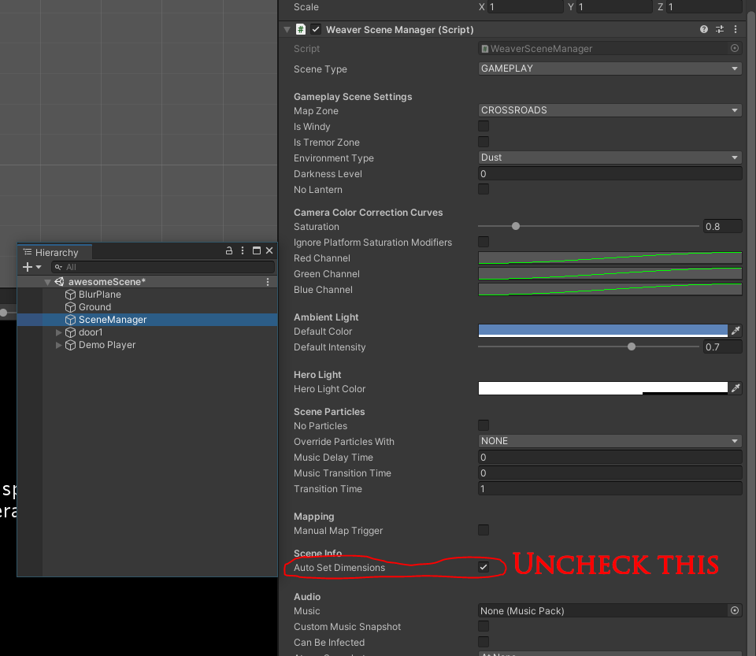
When we uncheck this, we can see what the Scene Dimensions actually are:
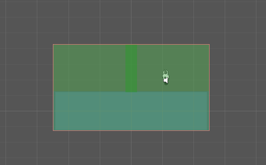
Basically, the scene's dimensions are used to define the limits of where the player and camera can go. The camera is programmed to NEVER go beyond the scene boundaries. By default, the Scene Boundaries are automatically calculated to contain all the visible objects the player can interact with. This is normally fine, and we could just leave "Auto Set Dimensions" enabled if we wanted to. However, in this case, the scene boundaries are so small, the camera isn't able to move. So we can disable "Auto Set Dimensions", and configure the scene boundaries ourselves:
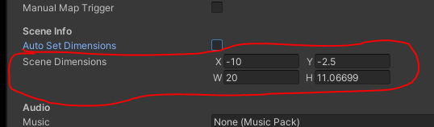
The X and Y values indicate the bottom-left corner, and the W and H values indicate the width and height respectively. After tinkering with the values a bit, here's the ones I came up with:

{
X: -20,
Y: -12.5,
W: 40,
H: 31.06699
}
That should give the camera some more room to move around. Now if we build the mod and start up hollow knight again, the camera can now move around, while staying within the scene boundaries we set:

Adding in other cool things
Now that we created our scene, lets put some things in it to make it more interesting.
NPCs
Lets add an NPC to our scene the player can talk to. To get started, insert a template NPC by going to "WeaverCore -> Insert -> Weaver NPC":
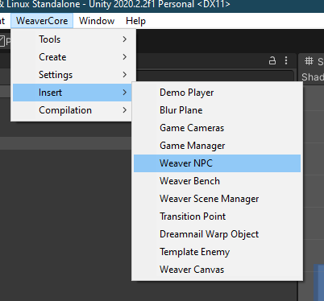
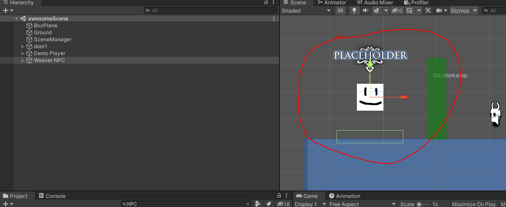
This object contains most of the things we need to have a fully functioning NPC. You can customize it as much as you want, but just make sure the BoxCollider has Is Trigger enabled and you don't remove the components.
However, we need one more thing in order to make this NPC talk. We need to create a new script, with a class that inherits from Conversation:
//DemoConversation.cs
using System.Collections;
using System.Collections.Generic;
using UnityEngine;
using WeaverCore.Assets.Components;
public class DemoConversation : Conversation
{
protected override IEnumerator DoConversation()
{
//We will do the main conversation stuff here
yield break;
}
}
Make sure you add this component to the NPC object we inserted:

The DoConversation() function is where all the magic happens. This is where we control what the NPC is going to say when the player talks to it. There are three main functions we can use to control the flow of the conversation:
- The Speak() function allows use to say a message
- The PresentYesNoQuestion() function presents the player with a yes and no question (with an optional geo cost the player needs to pay)
- The DisplayTitle() function is used to display a title card in the bottom-left corner of the screen. This is used to display the name of the character we are talking to
Here's an example of the functions in use:
using System.Collections;
using System.Collections.Generic;
using UnityEngine;
using WeaverCore.Assets.Components;
public class DemoConversation : Conversation
{
protected override IEnumerator DoConversation()
{
//Displays the title card "Mike" in the bottom-left corner
DisplayTitle("Mike");
//Speaks two messages, split into two pages
yield return Speak("Hello! I am a test NPC, my name is Mike",
"I am here to test out the conversation system made by WeaverCore!");
//Presents a yes and no question
yield return PresentYesNoQuestion("Is this dialog box working?");
//Was the result of the question a yes?
if (DialogBoxResult == YesNoResult.Yes)
{
yield return Speak("Good, that means it's working!");
}
//Was the result of the question a no?
else if (DialogBoxResult == YesNoResult.No)
{
yield return Speak("Well, the fact that you were able to select \"No\" in the first place means it should be working");
}
//Present a new question, but 5 geo is required to select "Yes"
yield return PresentYesNoQuestion("Test the dialog box again by spending geo?", 5);
if (DialogBoxResult == YesNoResult.Yes)
{
yield return Speak("Thanks for you donation", "Well, thanks for stopping by");
}
else if (DialogBoxResult == YesNoResult.No)
{
yield return Speak("Come on! It's only 5 Geo", "Well, thanks for stopping by");
}
}
}
With this script now complete, we can now build the mod, start up the game, head into our new scene, and talk with the NPC:
[!Video https://www.youtube.com/embed/IYEfPIDenBA
Benches
Benches can also be added to our new scene, so when the player leaves the game and comes back, they will spawn on our bench in the new scene. To add one, go to "WeaverCore -> Insert -> Weaver Bench":
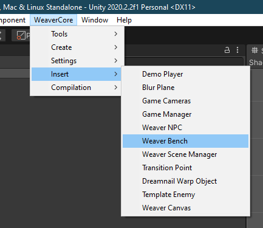
This will insert a premade bench into the scene that we can customize.

In fact, this bench is able to work in-game out of the box, so we can build our mod, go into our scene, and sit on our new bench:
DreamWarp Object
A final thing that can be inserted is a dreamwarp object. It is an object that the player dreamnails to get transported to a new scene. To add one, go to "WeaverCore -> Insert -> Dreamnail Warp Object":

This will create a simple object, that when dreamnailed, warps the player to a new scene:
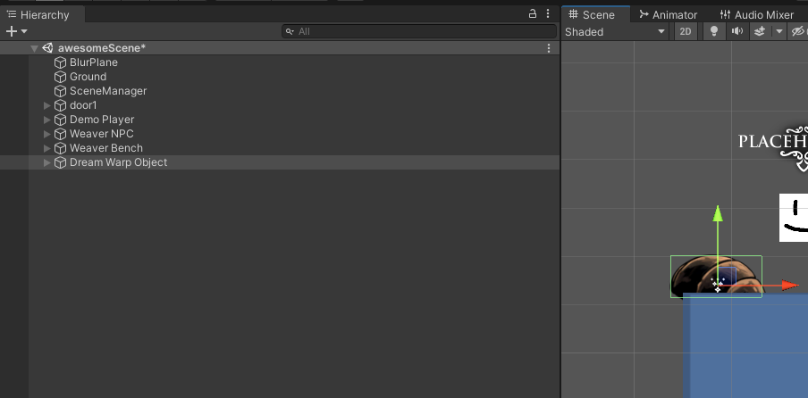
Configuration
On the object, there is a Dream Warper component that has three fields we need to fill in:
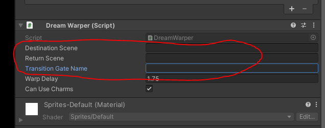
- Destination Scene is the name of the scene the player will be transported to when they dreamnail this object
- Return Scene is the name of the scene the player will be transported to when they leave the dream scene
- Transition Gate Name is the name of the Transition Point the player will spawn at when they are transported to the destination scene
Lets create a new scene the player will get transported to. You can create one by going to "File -> New Scene", selecting "Game Scene Template", and clicking the Create button, just like before:
We will name it "dreamScene":
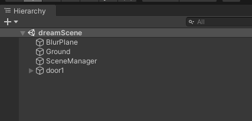
We will also disable the Transition Point component on the "door1" object. This turns the doorway into a one-way door, where the player cannot use it to leave the scene (don't worry, we will add a different way for the player to leave the scene):

Also, since we don't want the camera to fade in from black when we enter the scene, we need to enable "Custom Fade":

Now we need a way for the player to leave the dream scene. This can be accomplished via a "Dream Fall Catcher". A dream fall catcher is an object that, when the player collides with it, will be warped out of the dream scene. We can add one by going to "WeaverCore -> Insert -> Dream Fall Catcher". We will put it below the ground, so when the player falls off, they will collide with it and get sent back:

On the fall catcher itself, we also need to specify the gate the player will return to. We will specify a gate name of "dream_return":
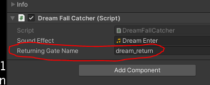
With the dream scene done, we can save it and head back into our initial scene that contains the dream warper object:

We now need to create a new Transition Point named "dream_return". It can be created by going to "WeaverCore -> Insert -> Transition Point", and renaming it to "dream_return":

Just like with the other TransitionPoint in the dreamScene, we also need to disable the WeaverTransitionPoint component so the door is one-way only, and enable Custom Fade, since we are using a custom dream warp camera fade:

Important
Make sure that the dream_return gate has a gate type of Door, and "Is A Door" is set to true, otherwise the player will start sliding immediately upon returning back from the dream scene

We can now fill in the following information into the Dream Warper component:
- Destination Scene will be "dreamScene"
- Return Scene will be "awesomeScene" (or whatever you named the main scene as)
- Transition Gate Name will be "door1", since the name of the TransitionPoint in the dream scene is "door1".

With the dream warper object all set, all that's left to do is add our new dream scene to the Scene Record:

We can now build the mod and start up Hollow Knight To test it out. Here's a rough overview of what's going on:
- The player leaves the Hall of Gods room and enters "awesomeScene"
- The player dream nails the dream warper object, transporting them to "dreamScene". They spawn at the "door1" transitionPoint
- The player falls off the map and hits the "Dream Fall Catcher", which transports them back to "awesomeScene"